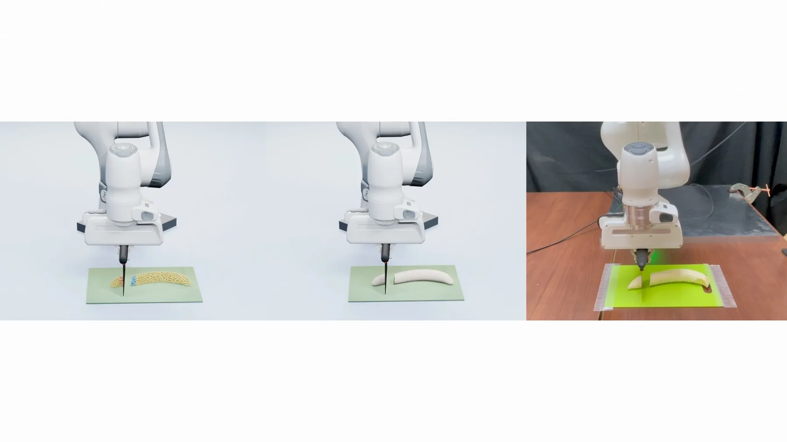
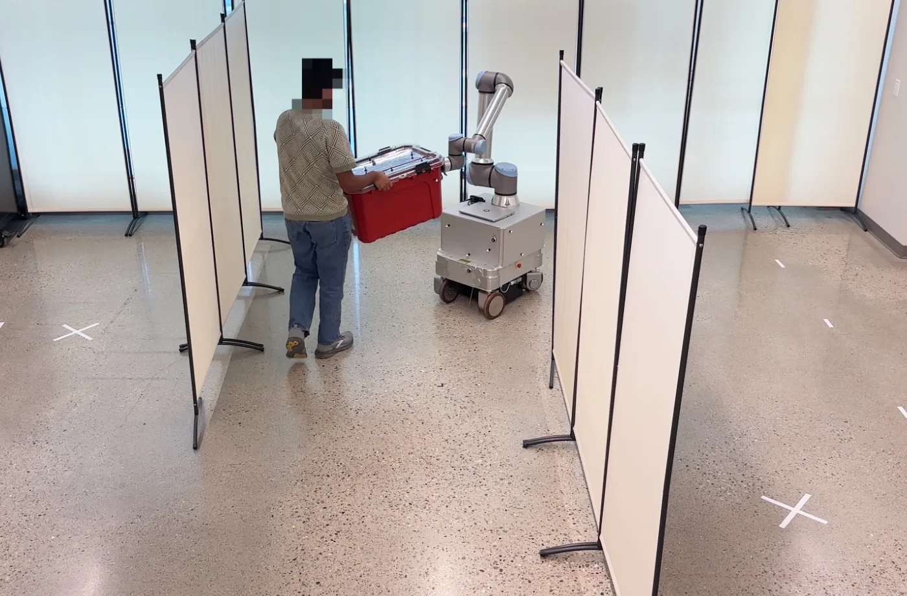

新论文 · 日期 2026-09-24 · score 16 · A层 · Robotic Foundation Models / VLA · cs.RO, cs.GR
内容级别：半海报
作者：Fuqiang Zhao, Qian Liu
评分 16/10
解耦对齐表示Kabsch/Procrustes 闭式求解异构状态流匹配穿透惩罚 GWN灵巧抓取
一句话工作总结：把 SE(3) 从网络输出空间移出，改成“关节角 + 任务空间锚点”的欧氏生成，再由 Kabsch 闭式恢复根位姿，从而以更少测试时计算得到物理可行的灵巧抓取。
灵巧抓取生成通常在关节空间里同时回归全局刚体运动与局部关节角，杠杆臂会放大远端链节的漂移，欧氏旋转参数化还带来拓扑困难，导致样本不稳定与物理上不可行的接触。论文提出 Decoupled Alignment（DEAL）表示：交互状态由任务空间几何锚点与关节角组成，刚体变换由闭式 Procrustes/Kabsch 对齐解析恢复，网络不再直接回归 SE(3)。生成用异构状态流匹配（分量各自的向量场），并用训练期的时间自…
Synthesizing realistic articulated hand-object interactions is a fundamental problem in virtual reality, embodied intelligence, and digital human applications. Existing methods for dexterous grasp synthesis ty…

新论文 · 日期 2026-09-24 · score 15 · A层 · Geometry Foundation Models / 3D Foundation Models · cs.CV, eess.IV
内容级别：半海报
作者：Han-Gyeol Kim, JaeWan Park, Junmin Park, Darongsae Kwon
评分 15/10
卫星立体匹配合成数据 sim-to-real遮挡掩膜 linetrace交会角与基线采样零样本迁移
一句话工作总结：把卫星轨道几何与遮挡标签做成物理可控的监督信号，证明“合成几何监督”可以零样本迁移到真实卫星立体匹配基准，并以 10,000 对规模与真实数据集对齐比较。
卫星影像三维重建依赖高质量训练数据，但带精确遮挡标签的高保真数据缺失：US3D、WHU-Stereo 等多时相基准存在时空错配（阴影位移、地物变化），LiDAR 稀疏又让遮挡区真值含混。论文用 Unreal Engine 搭建 SatUnreal：10,000 对 0.3 m GSD、2048×2048 立体像对，按平地近似把轨道高度缩放为 1 km 以保持 B/H 比，基线 50–200 m 分 20 档、方位角…
3D reconstruction from satellite imagery is essential for large-scale topographic analysis, yet the lack of high-fidelity training datasets with accurate occlusion labels remains a primary bottleneck. Existing…

新论文 · 日期 2026-09-24 · score 14 · A层 · Embodied Navigation / VLN / Spatial Reasoning · cs.RO
内容级别：半海报
作者：Toan Nguyen, Weiduo Yuan, Siheng Zhao, Yue Wang, Daniel Seita
评分 14/10
全身 loco-manipulation解耦势场 HOD-PF双智能体 PPO专家到通才蒸馏sim2real 部署
一句话工作总结：把障碍几何写成两组可查询势场并同时用作策略输入与奖励，再用双智能体拆分全身动作空间，使搬运中的避障引导与平衡控制不再在同一优势估计里竞争。
人形机器人搬运物体时，杂乱环境会同时从地面、侧面和上方压缩可用空间，机器人和被搬物体都必须挤进剩余空隙。论文提出 HOTICE：① 人形-物体解耦势场（HOD-PF）把机器人自身与所搬物体的避障拆成两组引导场，物体一侧用膨胀后的障碍计算，以获得更提前的转向；② 双智能体强化学习把 20 维全身动作拆成上半身 8 维与下半身 12 维两个 actor-critic，通过共享状态与共享奖励项保持全身协调；③ 专家到通才…
Object transportation is a fundamental capability for humanoid robots operating in real-world, human-centric environments, yet existing methods struggle when clutter constrains free space around both the robot…

新论文 · 日期 2026-09-24 · score 11 · A-层 · Real-time / GPU Robotics Systems · cs.RO, cs.GR
内容级别：简报式摘要
作者：Zhanyu Yang, Yunuo Chen, Yanjia Huang, Joseph Masterjohn, Yin Yang, Chenfanfu Jiang
评分 11/10
TLMPM持久侧标签在线切口生成GPU 实时仿真切削阻力
一句话工作总结：把切口历史编码成物质点上的持久侧标签，用参考网格耦合一致性维持断口分离，从而在 GPU 上以快于实时的速度支持渐进与相交切割及后续操作。
切割同时改变可形变物体的形状与拓扑，仿真器需要在线跟踪刀的运动、在刀具撤出后保持已有断口，并让新生表面继续与刀具和其他表面交互。论文提出基于全拉格朗日物质点法（TLMPM）的 GPU 切割框架：用随时间扫掠的刀体几何在线给物质点分配持久侧标签（每个切口一位三进制数，构成侧编码），由标签决定哪些物质点可以共享参考网格状态，从而在刀具撤出后仍保持机械分离，且支持渐进与相交切口而无需预定义切面或粒子复制。材料-材料接触允…
Cutting changes both the shape and topology of deformable objects, making accurate simulation challenging for robotic manipulation. A simulator must track the cutting tool as a cut develops, preserve the resul…

新论文 · 日期 2026-09-24 · score 9 · A-层 · Real-time / GPU Robotics Systems · cs.RO, cs.HC, cs.LG
内容级别：简报式摘要
作者：Elvin Yang, Christoforos Mavrogiannis
评分 9/10
人机协同搬运物体运动预测顺从式全身控制移动机械臂交互功
一句话工作总结：用人类-人类协同搬运数据训练的物体运动预测器给顺从式全身控制器提供标称命令，使机器人在保持对使用者顺从的同时主动推进任务。
人机协同搬运要求机器人既高效推进任务又对使用者的物理输入保持顺从，既有工作往往只做其中之一：要么高效但抗拒输入，要么顺从而依赖持续引导。论文提出 PROACT，用学习到的人类协作行为模型把对物体未来运动的预测接入顺从式全身控制。模型是基于 transformer 的物体 twist 预测器，训练数据取自 Freeman 等人的双人协同搬运数据集（31 组人类配对、含障碍与指令条件），以物体运动作为协作交互的紧凑表示…
We focus on human-robot collaborative transport, a challenging task of broad relevance spanning logistics, manufacturing, and the home, in which a user and a robot work together to relocate a large or heavy ob…